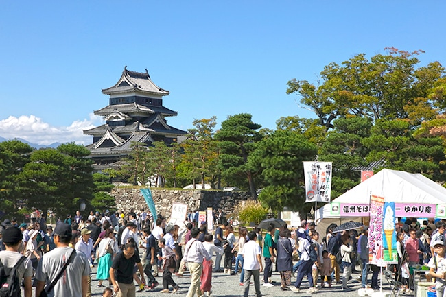
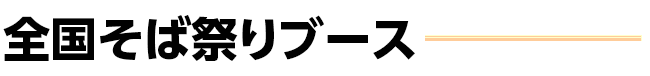
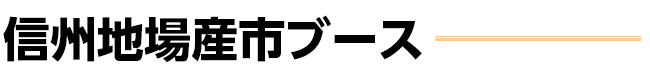

| 都道府県 | ブース名 | 出品品目(一例) |
|---|---|---|
| 北海道 | 北海道空知上砂川手打ちそば愛好会 | もりそば/かけそば/えび天ぷら付もりそば・かけそば/にしん付もりそば・かけそば |
| 福島県 | 会津磐梯そば道場 | もりそば/かけそば/会津高遠冷かけ/焼ネギ・キクラゲ入り |
| 長野県 | 信州ゆかり庵／NPO法人信州そばアカデミー | 冷、天セイロ/温、天ぷらそば |
| 長野県 | 雪村そば（株式会社美包) | もりそば/肉そば/もりそばとぷちおやき/もりそばとおこわ |
| 福井県 | ふくいそば打ち愛好会 | 越前おろしそば |
| 兵庫県 | 出石皿そば | 出石皿そば |
| 北海道 | 北海道そば | もりそば/天セイロ |

| 都道府県 | ブース名 | 出品品目(一例) |
|---|---|---|
| 長野県 | Sink or Swim(縁×イッパチ) | 牛タンシチュー/信州牛バーガー/唐揚げ/フライドポテト |
| 長野県 | いぶしや | 信州味噌だれ和牛串焼・豚串焼/五平餅/生ビール |
| 長野県 | ㈲オリジン | ドライフルーツ/塩乾/安曇野野菜 |
| 長野県 | 鎌倉麺業㈱ | 半生そば/新そば粉/そばまんじゅう/そば茶 |
| 長野県 | 頑固そば道具 會津 中村豊蔵 | そば道具全般 |
| 長野県 | キッセイ商事 澤志庵製麺所 | そば/そば粉 |
| 長野県 | グラン・シャリオ・コンパニー | 生ビール/ソフトドリンク/りんご飴/山賊焼/クレープ/牛串/ポテト/ソフトアイス |
| 東京都 | ㈱コスモサウンド | ＪＶＣケンウッド音響機器 |
| 長野県 | コナモンズ | とりもつ煮/山賊揚げ/焼きそば/牛串/飴細工/ポテト/ケバブ/焼き団子 |
| 神奈川県 | 藍染市場 | 藍染 Tシャツ・帽子・バッグ・小物/ろくろ各種 |
| 長野県 | 信州ガレット振興会 | ガレット/そばビール/シードル |
| 長野県 | 信州須坂フルーツブルワリー | 信州須坂フルーツエール リンゴ/シャインマスカット/ミックス/ペールエール |
| 新潟県 | 新潟左藤蔵刃物㈱セキカワ | そば包丁/お料理包丁/ナイフ/鋏/そば道具 |
| 長野県 | café SENRI 茜里＆城GUSUKU | ソフトクリーム・山賊焼・シャインマスカット・生ビールなど |
| 長野県 | SOCO CAFÉ | 信州ジビエバーガー/ダージーパイ/生ビール/ハイボール/かき氷 |
| 長野県 | テレビ信州 | ＰＲ |
| 長野県 | Ｄｏｌｃｅ ＶｉＶｉ | だんご/五平餅/おやき |
| 長野県 | ジェラートハッチ | ジェラート/ドリンク |
| 長野県 | ピーロートジャパン株式会社 | ピーロートブルーカビネット・アウスレーゼ/ポールフォーラス/パナメラシャルドネ/他ワイン |
| 東京都 | プレミアムウォーター株式会社 | 天然水のウォーターサーバー |
| 長野県 | 町の店おほり | おやき/リンゴジュース/ジャム/甘酒/そば |
| 長野県 | 松本市水道局 | ＰＲ |
| 長野県 | 松本平の地酒(販売・有料試飲) | 清酒(販売・有料試飲) |
| 長野県 | 株式会社マル井 | あらぎりわさび/生わさび/わさびチーズ/七味チーズ/わさびドレッシング |


●会場周辺には専用駐車場がありませんので公共交通機関をご利用下さい。
●信州・松本そば祭りはそばを提供するイベントです。そばアレルギー及びその疑いのある方はご来場の際は、ご注意ください。